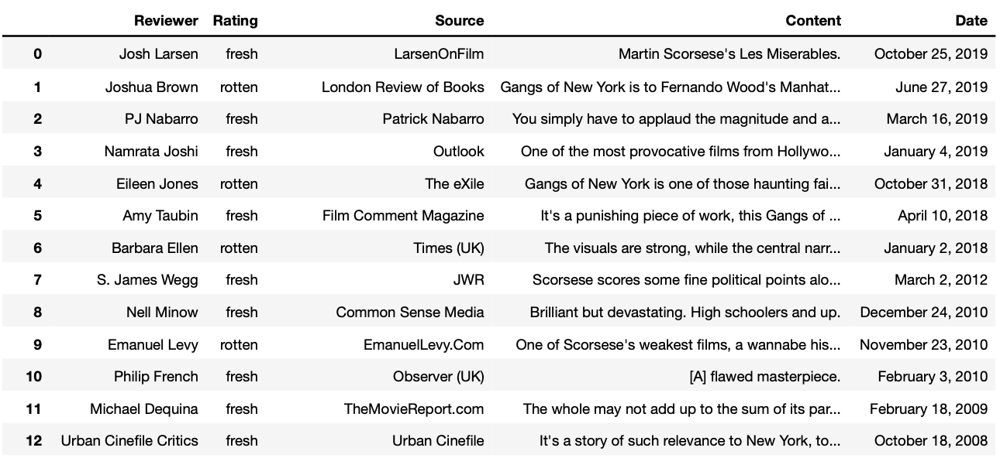
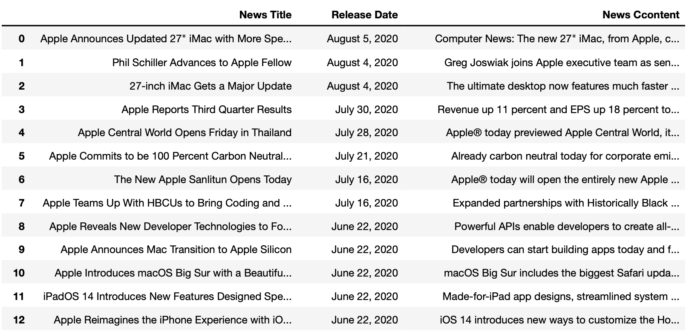

Automated Data Extraction
An automated data extraction tool to save the manpower required to extract relevant content

Executive Summary
Web crawling is the extraction of needed data from websites. In this blog, I give two web crawling demos that I have done using different methods. I used Python as the scripting language, Beautiful Soup and Selenium library to extract the necessary information. The types of web pages that I crawled include static web pages and dynamic web pages. Static web pages are web content that is fixed and not capable of action or change. A web site that is static can only supply information that is written into the HTML source code and this information will not change unless the change is written into the source code. However, Dynamic web pages contain dynamically-generated content that is returned by a server based on a user's request. The user can request for the information, which can be retrieved from the database based on the user input parameters.
Business Goal Analysis
A web crawler can be an invaluable tool to save the manpower required to extract relevant content, which allows you more time to actually review and analyze the data, putting it to work for your business. A web crawler can be set up to locate and gather complete or partial content from public websites, and the information can be provided to you in an easily manageable format. Without web crawler, more manpower is required to manually browse through numerous product pages and copy paste the pricing one by one into Excel sheet. This process would be very repetitive, especially if data are collected every day/every hour.
Demos
• Static web pages crawling demo
Webpage: https://www.rottentomatoes.com/Tool used: Python request, beautiful Soup
Overview: Use python code to automatically crawl 10 pages of randomly selected 10 movies from rotten tomatoes. Collect information, such as 'movie name', 'rating', 'release date' for each movie. Finally, format data to a dataframe and put them into csv file.
Scarping logic:
- Construct the URL of the search results page from Rotten Tomatoes.
- Download HTML of the search result page using Python Requests.
- Parse the web pages using beautiful Soup.
- Save the data to a CSV file.

• Dynamic web pages crawling demo
Webpage: https://finance.yahoo.com/Tool used: selenium
Overview: Use python code to automatically visit the yahoo finance homepage of the given three stocks("FB","AAPL","GOOG"), find the press release section corresponding to each stock, automatically scroll down to the bottom for 3 times, and collect information as following: news title, news release date, news content.
Scarping logic:
- Create a WebDriver instance.
- Construct the URL of the search results page from Yahoo Finance.
- Locate an HTML element on the selected Web page using selenium.
- Save the data to a CSV file.


Conclusion and Future Direction
In this post, I’ve demonstrated how Selenium, request and Beautiful Soup work with examples. The two web scrapers mentioned above can work on any public webpages with some necessary revision. However, some certain webpages legitimate restrictions in place. On the other hand, some sites welcome and encourage data to be retrieved from their website and in some cases provide an API to make things easier. Either way, it’s better to check with the terms and conditions before starting any crawling.